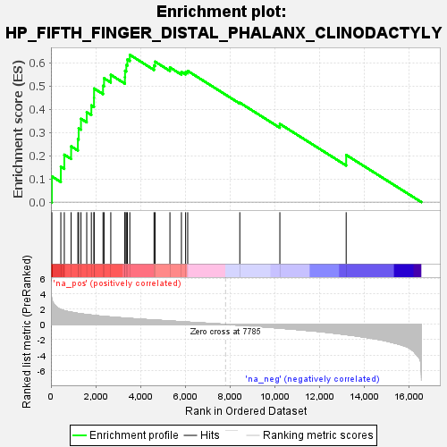
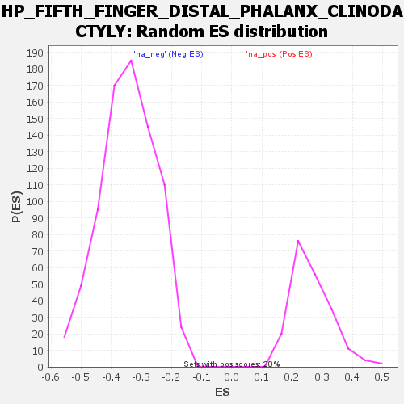

| | | Dataset | all_genes |
| Phenotype | NoPhenotypeAvailable |
| Upregulated in class | na_pos |
| GeneSet | HP_FIFTH_FINGER_DISTAL_PHALANX_CLINODACTYLY |
| Enrichment Score (ES) | 0.6345198 |
| Normalized Enrichment Score (NES) | 2.3794382 |
| Nominal p-value | 0.0 |
| FDR q-value | 0.001335492 |
| FWER p-Value | 0.009 |
Table: GSEA Results Summary

Fig 1: Enrichment plot: HP_FIFTH_FINGER_DISTAL_PHALANX_CLINODACTYLY
Profile of the Running ES Score & Positions of GeneSet Members on the Rank Ordered List
| SYMBOL | RANK IN GENE LIST | RANK METRIC SCORE | RUNNING ES | CORE ENRICHMENT | | 1 | LZTFL1 | 41 | 3.319 | 0.1107 | Yes |
| 2 | BBS4 | 441 | 1.936 | 0.1525 | Yes |
| 3 | BBS1 | 596 | 1.790 | 0.2042 | Yes |
| 4 | NPHP1 | 900 | 1.597 | 0.2403 | Yes |
| 5 | TTC8 | 1202 | 1.441 | 0.2713 | Yes |
| 6 | ARL6 | 1237 | 1.426 | 0.3178 | Yes |
| 7 | BBS9 | 1340 | 1.388 | 0.3590 | Yes |
| 8 | CFAP418 | 1597 | 1.288 | 0.3874 | Yes |
| 9 | MKS1 | 1803 | 1.215 | 0.4164 | Yes |
| 10 | BBS12 | 1921 | 1.176 | 0.4494 | Yes |
| 11 | IFT172 | 1924 | 1.174 | 0.4893 | Yes |
| 12 | SDCCAG8 | 2324 | 1.050 | 0.5010 | Yes |
| 13 | GJA1 | 2370 | 1.038 | 0.5336 | Yes |
| 14 | SCAPER | 2671 | 0.963 | 0.5483 | Yes |
| 15 | CEP290 | 3301 | 0.821 | 0.5382 | Yes |
| 16 | IFT74 | 3307 | 0.820 | 0.5658 | Yes |
| 17 | SCLT1 | 3363 | 0.809 | 0.5901 | Yes |
| 18 | BBS5 | 3412 | 0.800 | 0.6145 | Yes |
| 19 | CEP19 | 3520 | 0.778 | 0.6345 | Yes |
| 20 | MKKS | 4601 | 0.571 | 0.5886 | No |
| 21 | WDPCP | 4647 | 0.564 | 0.6050 | No |
| 22 | BBS7 | 5311 | 0.444 | 0.5800 | No |
| 23 | BBIP1 | 5824 | 0.351 | 0.5610 | No |
| 24 | BBS10 | 6011 | 0.317 | 0.5605 | No |
| 25 | TRIM32 | 6105 | 0.298 | 0.5650 | No |
| 26 | BBS2 | 8430 | -0.117 | 0.4282 | No |
| 27 | IFT27 | 10218 | -0.492 | 0.3368 | No |
| 28 | NPR2 | 13178 | -1.342 | 0.2033 | No |
Table: GSEA details [plain text format]

Fig 2: HP_FIFTH_FINGER_DISTAL_PHALANX_CLINODACTYLY: Random ES distribution
Gene set null distribution of ES for HP_FIFTH_FINGER_DISTAL_PHALANX_CLINODACTYLY